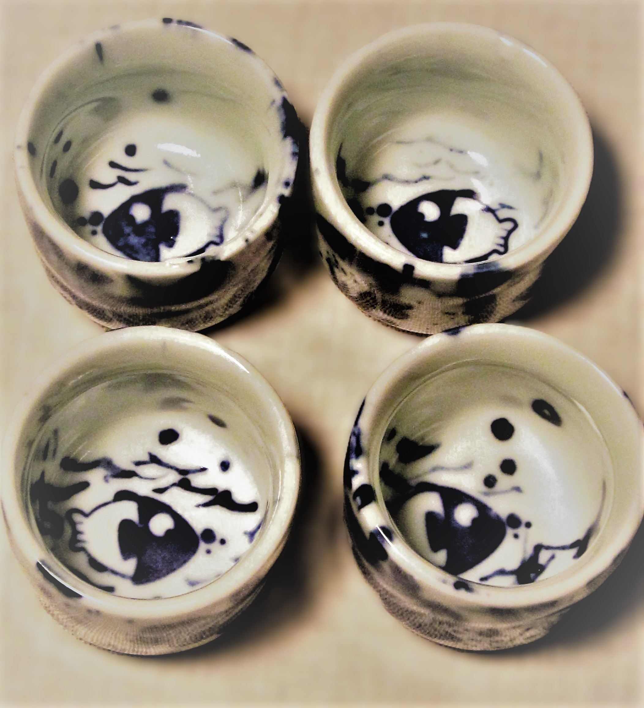

Dragonflies: Winged Jewels with a 300 Million Year Legacy
Dragonflies aren’t just pond decor. They’re aerial acrobats & prehistoric predators with insane flight skills (45 mph, zero apologies). In Chinese culture, they mean change and adaptability. So yeah, that delicate blue dragonfly on your plate?
Basically a tiny, ancient warrior. Respect.
Lotus Flowers: Nature’s Ultimate Comeback Story
From Muddy Beginnings to Porcelain Elegance. Lotuses don’t just grow, they slay. These flowers thrive in muddy ponds, pushing through sludge to bloom pristine. In China, they symbolize purity and resilience (talk about #goals).
My plate’s lotus isn’t just decoration. It’s a ceramic mic drop to life’s messy challenges.
Lily Pads: The Pond’s Chillest Lounge
Lily pads aren’t just leaf rafts. They’re pond VIP sections. Frogs chill on them, dragonflies use them as runways, and in Chinese art, they frame harmony. My cups’ mottled glaze? That’s the lily pad effect...imperfect, organic, and totally serene. Nature’s vibe, captured in porcelain.
Fish: The Underwater Philosophers
Swimming Symbols of Luck (and Sneaky Deep Thoughts) Those koi fish looping

your teacup? In China, they’re living luck charms, representing wealth and perseverance. But here’s the tea: they also symbolize flow going with life’s current. So sip slow… and maybe take life’s twists like a pond fish. Zen mode activated.
A Mini Ecosystem You Can Drink From
This set isn’t just dishware. It’s a pond ecosystem freeze frame. Lotus on the plate? Check. Fish in the cups? Check. Dragonfly cameo? Double-check. Every piece tells a watery story, blending science (lentic ecosystems, hello?) with art. Also, it’s basically a mindfulness exercise with snacks.
So the next time you sip tea, remember: your cup holds a whole pond’s worth of magic mud, wings, fins, and all. Nature’s drama, served ceramic-style.

Richard Diaz
Think of art like a great meal. The subject is the dish (what’s on the plate), the form is the recipe (how it’s cooked), and the content? That’s the chef’s secret ingredient—the "why" that makes it unforgettable. Dig deeper, and you’ll taste the full story.